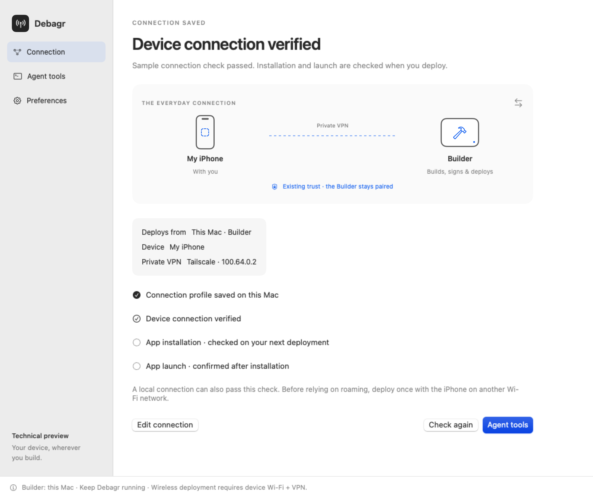

Make the introduction.
Pair over USB on your build Mac. Grant trust, enable Developer Mode, and capture the device’s local service once.
Ask your coding agent to install and launch a signed iPhone build, even on another Wi-Fi network. Debagr deploys through your paired Mac over your private VPN.
Free preview for personal/internal evaluation · macOS 26+ · Wi-Fi required
Agent → Mac: local commands or your existing SSH access. Mac → iPhone: your private VPN.

One paired Mac stays running. Your iPhone comes with you.
Pair over USB on your build Mac. Grant trust, enable Developer Mode, and capture the device’s local service once.
Connect both devices through a private VPN. Keep the Mac running with Xcode and Debagr while your device uses another Wi-Fi network.
Your agent checks readiness, installs your signed device .app, then confirms launch. The build and deployment execute on the paired Mac.
Where is the phone, and which Mac owns its Apple pairing?
Use Use existing pairing in Debagr. Save the phone’s VPN address and wireless service while it is nearby. Then take it to another Wi-Fi network, keep it unlocked with the VPN connected, and deploy through that Mac.
USB via Mac, in current source builds. Use an already paired iPhone through a cable connected to another Mac. The experimental CLI forwards device services over Tailscale with SSH control. Existing Builder pairing, an explicit cable endpoint and port are required. One iPhone readiness and installation test passed with Wi-Fi off; launch, debugger and recovery remain unverified.
For first-time Builder trust, the separate experimental Pair via USB/IP setup shares the selected device from the Mac with the cable. It requires compatible external USB tools and administrator approval on both Macs.
After pairing, stop USB forwarding and set up wireless deployment. Read the requirements before starting →
Connect the iPhone directly to the build Mac by USB once. Approve Trust, enable Developer Mode and run a local signed build from Xcode. Then choose Use existing pairing in Debagr.
Use Claude Code, Codex, or your terminal. Install the matching deployment plugin and follow the setup guide on the agent’s computer and give it access to the build Mac through your existing SSH setup.
Apple pairing stays on its original Mac. Your device does not become a run destination in another Mac’s Xcode.

See the selected device, its VPN address and the Mac that deploys. A connection check verifies trusted connectivity and lock state. Installation and launch are confirmed when an app is deployed.
If a check fails, Debagr shows a recovery instruction and a way to check again.

Silent product overview using native UI captures with sample data. This is a workflow illustration, not a recording of a hardware deployment.
Your Mac stays home. Your next build comes with you. Pair once over USB. Connect your Mac and device through a private VPN. Ask Claude Code, Codex, or your terminal to check readiness, install, and confirm launch. Keep the paired Mac running. Wi-Fi is required; cellular-only is unsupported.
Install with Homebrew: brew install --cask radeknovis/debagr/debagr. Or download the Developer ID signed, notarized DMG and its SHA-256 from the 0.3.0 release. There is no active checkout or announced subscription price.
Verified on hardware for 0.3.0: one remote iPhone install and launch over Tailscale, using a pre-release build. Not yet verified: first launch on a clean Mac, offline first launch, iPad, the recovery matrix, VPN providers other than Tailscale, macOS 13 to 15, the Homebrew upgrade from 0.2.0, and the experimental USB setup and two-Mac linking on hardware.
Sponsorship helps fund compatibility work, hardware testing, documentation, and signed releases. It supports development; it does not buy a license, guaranteed support, or a feature delivery date.
Funding channels are not active yet. No payment is collected here.
Debagr is not affiliated with or endorsed by Apple, Tailscale, OpenAI, or Anthropic.